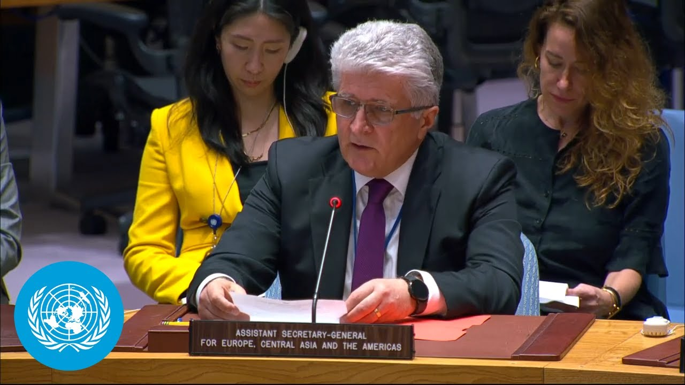

【联合国安理会简报：美国对伊朗核设施发动空袭标志着“危险升级”】
Summary: The briefing details US strikes on Iran's nuclear facilities, Iran's response, escalating regional tensions, civilian casualties, and calls for de-escalation and diplomatic solutions.
摘要： 简报详细介绍了美国对伊朗核设施的袭击、伊朗的回应、地区紧张局势升级、平民伤亡情况，并呼吁缓和局势和寻求外交解决方案。

⏱️ Estimated Reading Time: 6 min
📚 六级生词 📚 雅思生词 📚 托福生词 📚 专八生词 📚 SAT生词 📚 考研生词 📚 GRE生词 📚 高考生词
And I now give the floor to Miss Miruslav Yena.
现在请米鲁斯拉夫·耶娜女士发言。
Madame President, on the evening of 21 June, the president of the United States announced that the US military conducted strikes against the Foro Natans and Isvahan nuclear facilities in Iran.
主席女士，6月21日晚，美国总统宣布美军对伊朗的福尔多和伊斯法罕核设施发动了袭击。
Shortly thereafter, the Atomic Energy Organization of Iran confirmed that the attacks around the nuclear sites had taken place.
此后不久，伊朗原子能组织证实核设施周边遭到了袭击。
Iranian state media indicated the three sides had been evacuated and the highly enriched uranium stockpile transferred in advance.
伊朗官方媒体表示，三个地点的人员已提前撤离，高浓缩铀库存也已转移。
Iran has said there were no immediate signs of radioactive contamination at the three locations following the strikes.
伊朗表示，袭击后这三个地点未立即出现放射性污染的迹象。
The crisis management bureau of com where fordo is located stated that the perimeter of the fordo nuclear site had been targeted.
福尔多核设施所在的危机管理局表示，福尔多核设施周边区域成为袭击目标。
Iranian state media said only two tunnels for entry and exit were destroyed at Fordo.
伊朗官方媒体称，福尔多仅两条进出隧道被摧毁。
Preliminary open-source satellite imagery shows damage at various points at the facility.
初步开源卫星图像显示该设施多处受损。
I urge Iran to allow IAA inspectors access to the sites to conduct damage assessments as soon as safety conditions allow.
我敦促伊朗在安全条件允许时尽快让国际原子能机构核查员进入现场评估损失。
I also note that this council will shortly hear from IAA Director General Grace.
我还注意到安理会即将听取国际原子能机构总干事格罗西的汇报。
The latest development must be viewed with the utmost seriousness.
必须极其严肃地看待最新事态发展。
It marks a dangerous escalation in a conflict that has already devastated many lives in both countries in a region on the edge.
这标志着本已造成两国大量人员伤亡、地区濒临崩溃的冲突出现危险升级。
It is a direct threat to international peace and security.
这对国际和平与安全构成直接威胁。
Madame President, Under Secretary General D Carlo told this council only two days ago that we were teetering on the edge of a fullblown conflict.
主席女士，副秘书长迪卡洛两天前刚向安理会表示我们正处在全面冲突的边缘。
I fear we are now in that dangerous moment.
恐怕我们现在已处于这一危险时刻。
Meanwhile, the hostilities between Israel and Iran continue and are now in their 10th day.
与此同时，以色列与伊朗的敌对行动持续，现已进入第十天。
Hours after the US strikes, the Islamic Revolutionary Guard Corpse IRGC said it had launched some 40 missiles at Israel.
美国空袭数小时后，伊朗伊斯兰革命卫队宣布向以色列发射约40枚导弹。
Israeli authorities reported that more than 85 people were injured in the barrage and numerous structures in Tel a Viv and its southern suburbs sustained heavy damage including many residential buildings and an elder care home.
以色列当局报告称袭击造成85人受伤，特拉维夫及南郊大量建筑严重受损，包括多栋住宅楼和一所养老院。
Israel also said it had launched a series of strikes against military targets in Iran, including in Tehran, Tabris, and Yaft.
以色列还表示对伊朗境内军事目标发动系列打击，包括德黑兰、大不里士和亚夫特等地。
The Israel Defense Forces IDF said 30 fighter jets had struck dozens of military targets across Iran.
以色列国防军称30架战机袭击了伊朗境内数十个军事目标。
Iranian media reported several civilian fatalities, including children, and damage to homes and other civilian infrastructure.
伊朗媒体报道称有多名平民丧生，包括儿童，房屋和其他民用基础设施受损。
Earlier on 21st June, Israel attacked for a second time since 13th June the Isvah nuclear complex, hitting six buildings.
6月21日早些时候，以色列自6月13日后再次袭击伊斯法罕核设施，击中六栋建筑。
According to Iran's Ministry of Health, as of 21st June, 430 people have been killed and more than 3,500 others injured due to Israeli strikes across Iran.
伊朗卫生部数据显示，截至6月21日，以色列袭击已造成伊朗全国430人死亡、3500多人受伤。
Most have been civilians.
其中大部分是平民。
According to Israeli authorities, 25 Israelis have been killed and 1,300 more have been injured since the beginning of exchanges with Iran.
以色列当局称，自与伊朗交火以来，已有25名以色列人死亡，1300人受伤。
Madame President, the conflict risks engulfing the region in further instability and volatility.
主席女士，这场冲突可能导致地区陷入更严重的不稳定和动荡。
Some non-state armed groups aligned with Iran warned against US involvement.
一些亲伊朗的非国家武装组织警告美国不要介入。
The Houthis in Yemen and some armed groups in Iraq wowed to attack if the US intervened in the conflict between Israel and Iran.
也门胡塞武装和伊拉克部分武装组织誓言若美国干预以伊冲突将发动攻击。
Iran's parliamentary parliament unanimously expressed support for measures to close the strait of Hormus, a vital maritime route for global energy transit.
伊朗议会一致支持采取措施关闭霍尔木兹海峡这一全球能源运输重要航道。
Iran's supreme national security council would need to take the final decision.
最终决定需由伊朗最高国家安全委员会作出。
I recall the rights and obligations of all states under international law in relation to maritime navigation.
我提醒各国根据国际法在海上航行方面享有的权利和承担的义务。
Madame President, the Middle East cannot afford yet another violent conflict where civilians pay the price of military confrontations.
主席女士，中东再经不起又一场让平民为军事对抗付出代价的暴力冲突。
And the world will also not be spared from the ramifications of this dangerous conflict.
世界也无法免受这场危险冲突的影响。
I echo the secretary general's call on member states and on the members of the security council to deescalate and to uphold their obligations under the UN charter, notably the obligation to settle their international disputes by peaceful means and other rules of international law.
我响应秘书长呼吁成员国和安理会成员缓和局势，履行《联合国宪章》义务，特别是以和平方式解决国际争端等国际法规则。
All states must live up to their nuclear commitments.
所有国家都必须履行核承诺。
All parties to the conflict must also comply with the relevant rules of international humanitarian law in the conduct of their military operations.
冲突各方在军事行动中还必须遵守国际人道法的相关规定。
There is no military solution to this conflict.
这场冲突没有军事解决方案。
We need diplomacy, deescalation, and confidence building now.
我们现在需要外交、降级和建立信任措施。
Thank you, Madame President.
谢谢主席女士。
Thank Mr. for his briefing.
感谢先生的通报。